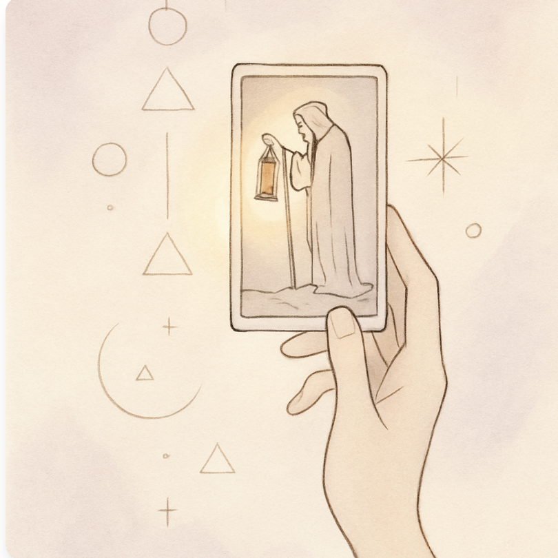
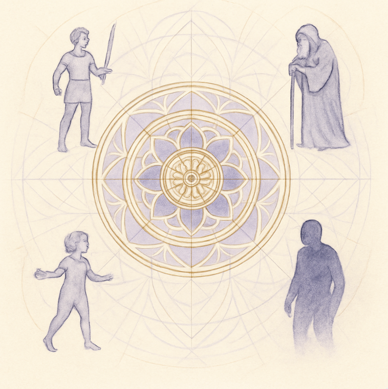

LANZAMIENTO ESPECIAL
Curso de Tarot y Autoconocimiento Jungiano
Un recorrido profundo para comprender procesos internos, arquetipos y movimientos del inconsciente.
No es adivinación. Es lectura simbólica, escucha y sentido.
¿Qué es este curso?
Un espacio de formación y experiencia donde aprendés tarot aprendiéndote, integrando la mirada jungiana, el trabajo con arquetipos y la lectura del símbolo como vía de autoconocimiento.
Este es un proceso continuo de exploración interna donde el tarot se convierte en un espejo del inconsciente, permitiéndote acceder a una comprensión más profunda de ti mismo.
¿Qué trabajamos?
Arcanos Mayores como Arquetipos
Exploramos los 22 Arcanos Mayores como representaciones de arquetipos universales del inconsciente colectivo.
Escucha Interna
Desarrollamos la capacidad de escucha profunda, tanto para nosotros mismos como para otros.
Tarot como Espejo del Inconsciente
Utilizamos el tarot como herramienta para acceder a procesos internos y movimientos del inconsciente.
Lectura para Otros
Practicamos la lectura de tarot como herramienta de acompañamiento y autoconocimiento ajeno.
Lectura Simbólica
Aprendemos a leer los símbolos más allá de lo literal, buscando el sentido personal en cada carta.
Jung, Símbolo y Sentido Personal
Integramos la psicología jungiana con la lectura simbólica para un autoconocimiento profundo.

La Lectura Simbólica
En este curso, el tarot no es una herramienta de adivinación, sino de exploración simbólica. Cada carta es un portal hacia la comprensión de procesos internos y movimientos del inconsciente.
Aprendemos a escuchar lo que el símbolo nos comunica, permitiendo que la lectura se convierta en un acto de autoconocimiento profundo y transformador.
Tu Recorrido
Este curso funciona como un proceso continuo de exploración y transformación personal.
Suscripción mensual
Acceso a todos los encuentros del mes
Compromiso mínimo: 3 meses
Para integrar el aprendizaje
A partir del mes 4
Continuidad mensual libre, sin compromiso

Formato del Curso
Encuentros Quincenales
3 horas cada encuentro para una exploración profunda y sin prisa.
Grupo Reducido
Plazas limitadas para garantizar una atención personalizada.
Modalidad Presencial
Barcelona. Encuentros en vivo donde compartimos el espacio físico para una experiencia más inmersiva.
Modalidad Online
En vivo. Encuentros virtuales que permiten participar desde cualquier lugar, manteniendo la calidad de la experiencia.
Tu Inversión
Elige la modalidad que mejor se adapte a ti
Precios Regulares
Modalidad Online
95 €/mes
Modalidad Presencial
110 €/mes
A partir del mes 4, continuidad mensual libre.
Solo el Primer Mes
Modalidad Online
80 € 95 €
Ahorras 15 €
Modalidad Presencial
95 € 110 €
Ahorras 15 €
🚨 Plazas limitadas - ¡No te quedes sin tu lugar!
🚀 Importante
Este curso funciona como un proceso continuo. Si el grupo ya comenzó, el ingreso es excepcional, abonando el mes completo e incluyendo material de integración.
¿Listo/a para Empezar?
Plazas limitadas. Para recibir información e inscribirse, escribeme por DM.